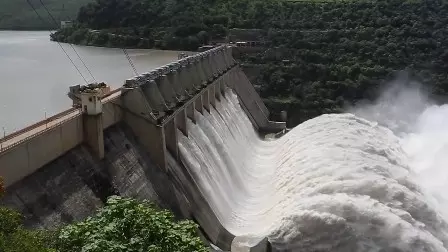

Kadam Dam
Kadam Dam, also known as Kadam Reservoir, is a scenic spot located in Adilabad district, providing water for irrigation and a serene environment for visitors.
Location: Adilabad, Telangana, India
Ticket Price: Free entry
Transportation: Accessible by road, about 35 km from Nirmal town.